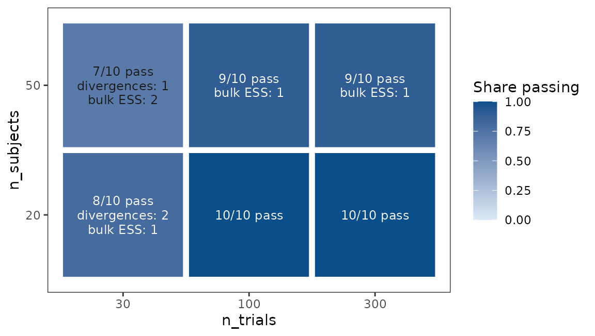
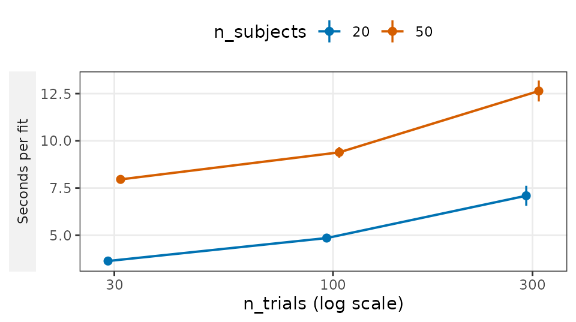
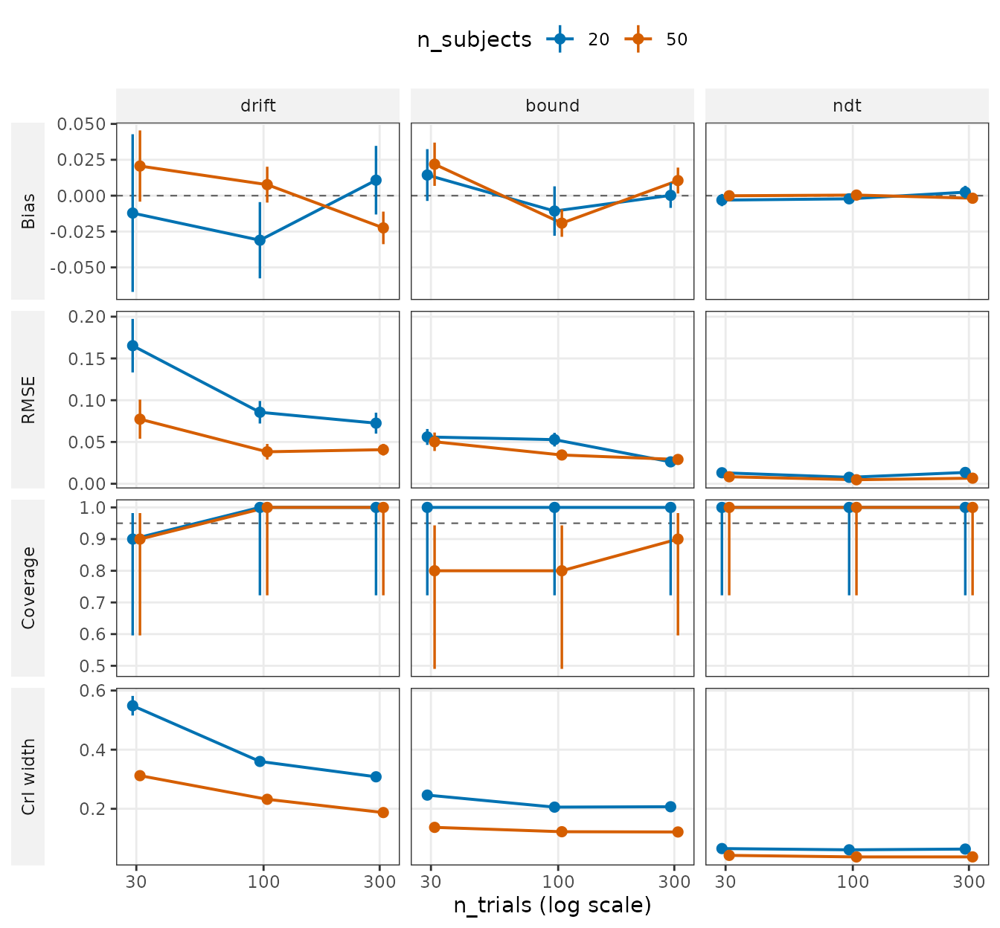
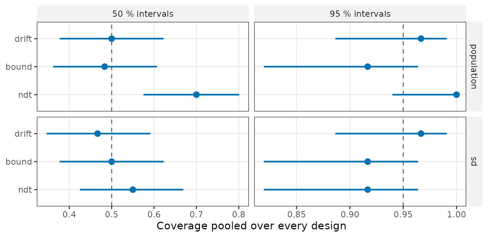
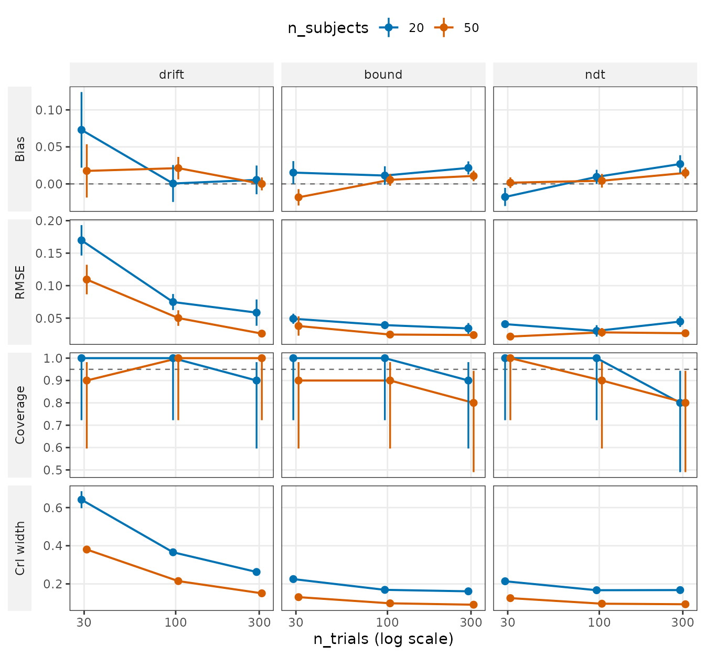
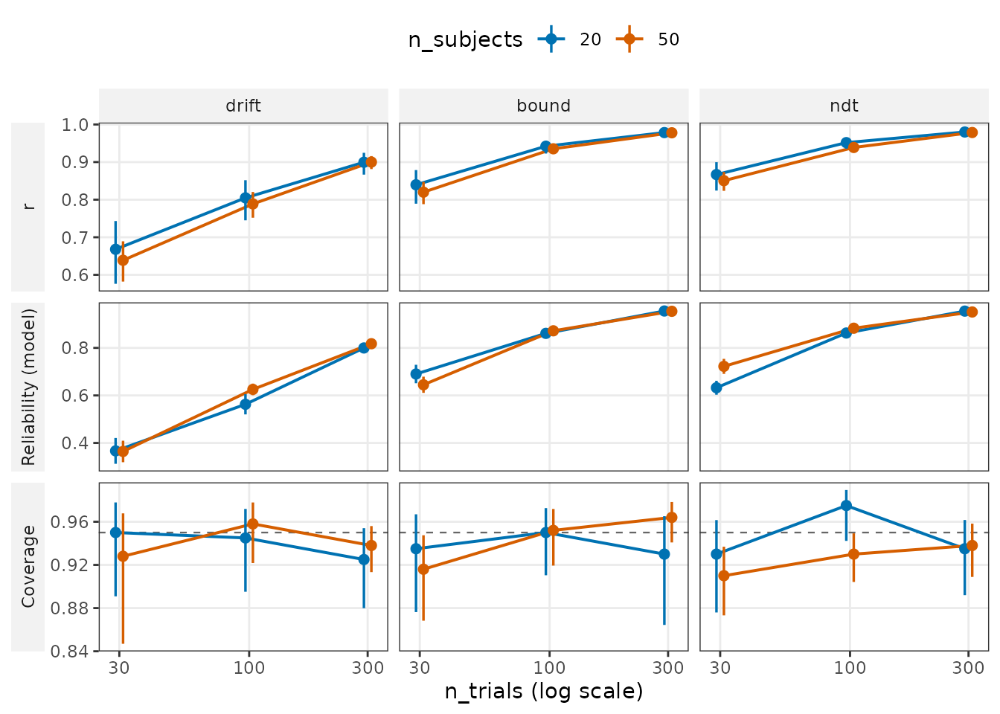
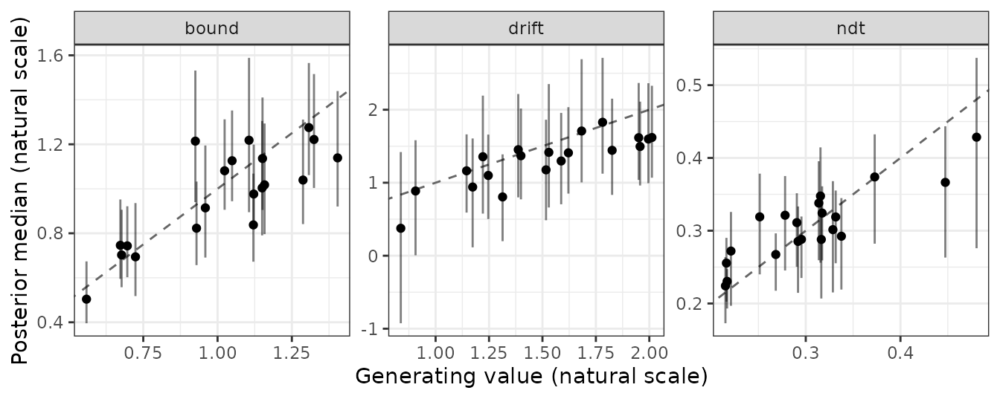
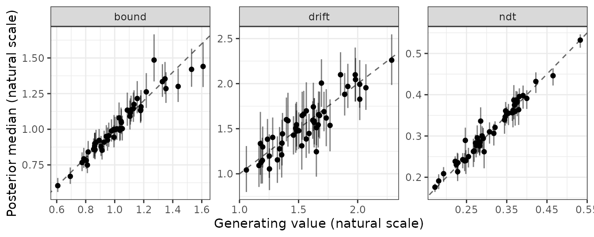
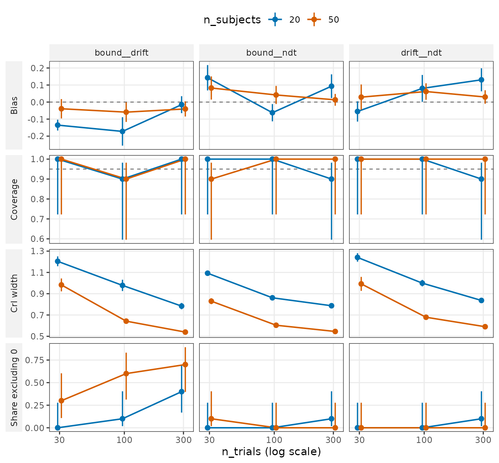

Recovering the EZ diffusion model on the standard grid
Source:vignettes/articles/recovery-ezdm.Rmd
recovery-ezdm.RmdThis page reports one parameter recovery study of the three-parameter
EZ diffusion model, bmm::ezdm(), fitted with bmm 1.4.1. The
model describes each person’s accuracy and response times by a drift
rate (drift), a boundary separation (bound)
and a non-decision time (ndt), estimated in one Bayesian
hierarchical model. Data were simulated from known parameter values, the
model was fitted to them, and the estimates were compared with the
values that generated the data. A researcher planning an EZ diffusion
study can read from it how well each parameter is recovered with 20 or
50 subjects and 30, 100 or 300 trials per subject, and how many trials
per person an analysis of individual differences needs at the generating
values used here. It does not say how many subjects a study of group
means or of correlations between parameters needs; it shows only what 20
and 50 subjects give.
A design is one combination of subjects and trials; the grid
has six. Each design was simulated and fitted 10 times, the
replications, so the study has 60 fits. The page reads every
number from the stored results of those fits, so the page builds without
refitting anything. bmmtools plans a validation card for each
model it supports, a standard report on the same grid of designs; the
card for ezdm will replace this page (issue
#21).
Reading the figures. Most figures below are drawn by
plot_design(): a quantity on the y axis, the number of
trials on a log x axis, one line for 20 and one for 50 subjects, and one
panel per parameter. Each row of panels has its own y axis, shared by
the panels in it. A point is the mean over a design’s ten replications,
and its bar shows how precisely ten replications pin that mean down. For
bias and interval width the bar is ±1 Monte Carlo standard
error (MCSE), the SD over the replications divided by √10; for RMSE
it is ±1 MCSE of the mean squared error, divided by twice the RMSE (the
delta method). For coverage and other shares the bar is a 95 %
Wilson interval: the range of true shares that the observed
count is consistent with. It stays between 0 and 1 and is not empty at
10 of 10: ten covered intervals out of ten are consistent with a true
coverage as low as 0.723, the lower end of the bar. A dashed line marks
the target where there is one: zero for bias, the nominal 0.95 for
coverage. The help page of plot_design() states the source
of every bar. The numbers behind each figure are in a table under it,
folded away; the text does not need them.
The model and the generating values
The values below are on each parameter’s link scale, explained after the code.
library(bmmtools)
model <- bmm::ezdm(
mean_rt = "mean_rt", var_rt = "var_rt", n_upper = "n_upper",
n_trials = "n_trials"
)
# population means on each parameter's link scale: drift rate 1.5
# (identity link), boundary separation exp(0) = 1 (log link),
# non-decision time 0.3 s (log link)
pars <- c(drift = 1.5, bound = 0, ndt = log(0.3))
# between-subject SDs of the person-level values, on the same scales
sds <- c(drift = 0.3, bound = 0.2, ndt = 0.2)
# between-subject correlations: people who drift faster also set wider
# boundaries (0.4); the other two pairs are uncorrelated
cors <- diag(3)
dimnames(cors) <- rep(list(names(pars)), 2)
cors["drift", "bound"] <- cors["bound", "drift"] <- 0.4
# The prior SD of each parameter under bmm's default priors, in closed
# form, for the contraction column: normal(., 0.5) on the bound and ndt
# intercepts, exponential(1) on sd(drift) and exponential(2) on the other
# two SDs. drift's intercept prior is cauchy(0, 1), which has no SD, so it
# has no row and its contraction is NA.
prior_sd <- data.frame(
term = c("bound", "ndt", "drift", "bound", "ndt"),
level = c("population", "population", "sd", "sd", "sd"),
prior_sd_link = c(0.5, 0.5, 1, 0.5, 0.5)
)Each parameter is estimated on its link scale, the unbounded
scale the model works on: drift as it is,
bound and ndt as logarithms, so a
between-subject SD of 0.2 on ndt means people differ by
about 20 % in non-decision time. The three-parameter EZ model fixes
s, the within-trial noise of the diffusion process, to 1.
At these population values a person answers correctly on 81.8 % of
trials, with a mean response time of 0.51 s (the EZ expressions for
accuracy and mean response time with s = 1).
prior_sd holds the prior SD of each parameter under bmm’s
default priors; it is used for the contraction reported in the
tables.
The run
out <- recovery_grid(
model,
grid = expand.grid(n_subjects = c(20, 50), n_trials = c(30, 100, 300)),
pars = pars, sds = sds, cors = cors,
dir = file.path(fits_dir, "recovery-ezdm"),
reps = 10,
re_cor = "all",
levels = c("population", "sd", "subject"),
correlations = "model",
prior_sd = prior_sd,
seed = 3131,
chains = 4, iter = 2000, warmup = 1000, cores = 4,
backend = "cmdstanr", refresh = 0, silent = 2
)reps = 10 is the number of replications per design.
bmmtools 0.2.0, which ran the script, did not pass seed on
to the chains’ starting values, so a second run gave estimates that
differ in the third decimal; later versions seed them too. The one place
where that matters is said below.
What the other arguments do
re_cor = "all" lets the model estimate all three
between-subject correlations. levels and
correlations = "model" choose what is compared with the
truth: the population means, the between-subject SDs, every subject’s
parameters, and the model’s correlation estimates. seed
fixes the simulated data and the sampler’s seed. The arguments after it
go to bmm::bmm(): four chains of 2000 iterations each, the
first 1000 of them warm-up. The help page of
recovery_grid() explains the rest.
plot_design(out, type = "convergence")
Every fit goes through bmmtools’ convergence gate, which asks whether the sampler explored the posterior well enough to trust the fit. A tile counts the fits that fail each check, and one fit can fail more than one.
What the gate checks
The gate checks every parameter of the fit, the between-subject
correlations and each person’s values included, and also
lp__ and lprior, the log posterior and the log
prior. R-hat compares the chains and should be close to 1; the
gate allows at most 1.05. The effective sample size (ESS)
counts how many independent draws the chains are worth; the gate asks
for at least 400 in the bulk of the posterior. The ESS in its tails is
reported, not gated. Divergent transitions are steps where the
sampler failed; the gate allows at most 10.
53 of the 60 fits pass; 46 pass if R-hat must also be at most 1.01.
Of the 7 fits that fail, 5 are at 30 trials; 5 fail on bulk ESS and 3 on
divergences. Leaving out lp__ and lprior, the
lowest bulk ESS sits on a between-subject correlation in most fits,
failing or not (6 of 7, and 46 of the 53 that pass), and on a population
mean in none that fails and in 5 of those that pass. The results below
use every fit; using only those that pass changes no r_low
value (the lower end of the interval of r, defined with the subject
parameters) by more than 0.033.
plot_design(out, metric = "fit_seconds")
A point is the mean seconds per fit of a design. Fitting took 7.6 minutes in all (bmm 1.4.1, CmdStan 2.40.0), between 3.3 and 14.4 seconds per fit.
The convergence numbers per design
| subjects | trials | fits passing the gate | passing with R-hat ≤ 1.01 | fits with any divergence (the gate allows 10) | mean seconds per fit |
|---|---|---|---|---|---|
| 20 | 30 | 8 | 7 | 8 | 3.6 |
| 20 | 100 | 10 | 10 | 3 | 4.9 |
| 20 | 300 | 10 | 10 | 4 | 7.1 |
| 50 | 30 | 7 | 5 | 5 | 8.0 |
| 50 | 100 | 9 | 7 | 0 | 9.4 |
| 50 | 300 | 9 | 7 | 0 | 12.6 |
Population means
plot_design(out)
For each fit the estimate is the posterior median. Bias is
the mean, over the ten replications, of estimate minus generating value;
RMSE is the root of the mean squared difference; CrI
width is the mean width of the 95 % credible interval (CrI); all
three are on the natural scale, seconds for ndt. Because
ndt is in seconds, its panels in these three rows look flat
on the y axis each row shares; do not compare them with drift’s by
height. Coverage is the share of the replications whose 95 %
CrI contains the generating value. Intervals of the right width contain
it 95 % of the time; intervals that contain it less often are too
narrow, and ones that contain it more often are too wide. For a Bayesian
interval at fixed generating values this holds only approximately
(exactly only on average over the prior); the approximation is close
here because the data outweigh the prior, with a mean contraction of at
least 0.97 in the tables below and, for drift’s population mean, which
has none, a posterior SD of at most 0.18 against the Cauchy prior’s
scale of 1.
The population means show no bias of practical size: at most 0.032 in
absolute value, and at most 2.2 % of the generating value. In 5 of the
18 cells the ±1 MCSE bar misses zero; with no bias at all, 6.2 would on
average if the estimates are normal around the truth. More subjects
narrow the intervals at every design and, for drift, lower the RMSE.
Coverage is where ten replications show their limit. The CrI of
bound covered in 8 of 10 replications with 50 subjects at
both 30 and 100 trials. The Wilson interval of 8 of 10 runs from 0.49 to
0.94, ending just below 0.95. Across the 18 cells that is no more than
chance gives: intervals of the right width cover in 8 or fewer of 10
with probability 0.086, so 1.55 of the 18 cells are expected to cover
that rarely, and this run has 2. Pooled over all six designs,
bound’s intervals cover at a rate whose interval contains
0.95 (the pooled coverage figure below).
plot_design(out, type = "coverage")
This figure pools the six designs, so each parameter has 60 intervals, on the assumption that all six share one coverage. Besides the 95 % interval, every fit also reported a 50 % interval, a second check of the width: it should contain the truth half of the time. Population means are in the upper row, between-subject SDs in the lower. For the 95 % intervals, 60 are still few: their Wilson interval excludes 0.95 only at 53 or fewer covered, which a true coverage of 0.90 gives with probability 0.39 and one of 0.85 with 0.82. Even at 60 of 60 it reaches down to 0.940, so it cannot show intervals that are too wide.
Every pooled Wilson interval contains its nominal value but one:
population ndt’s 50 % intervals cover in 42 of 60 (Wilson
interval 0.57 to 0.80, which excludes 0.50). With 12 intervals in the
figure, one such miss is no surprise: if each missed by chance one time
in 20, independently, at least one would with probability 0.46. But the
exact binomial p-value of 42 of 60 at 0.50 is 0.0027, below 0.05 / 12 =
0.0042. The 95 % intervals of population ndt cover in all
60; they come from the same posteriors, so they are not a second
finding. Its 50 % intervals are wider than their nominal mass. This run
is the only evidence for it so far: the second run mentioned above used
the same simulated data, so it cannot confirm it.
The population numbers per design
Contraction is 1 − (posterior SD / prior SD)², both on the
link scale, unlike the other columns: near 1 when the data determine the
estimate and near 0 when the posterior is still the prior. Averaged over
the replications, as in the table, it is at least 0.984 for
bound and ndt: a posterior variance, on
average, at most 1.6 % of the prior variance. drift has
none, because its default prior on the population value is a Cauchy
distribution, which has no SD.
| subjects | trials | parameter | bias | RMSE | covered | CrI width | contraction |
|---|---|---|---|---|---|---|---|
| 20 | 30 | drift | -0.012 | 0.165 | 9/10 | 0.549 | – |
| 20 | 30 | bound | 0.014 | 0.056 | 10/10 | 0.246 | 0.985 |
| 20 | 30 | ndt | -0.003 | 0.013 | 10/10 | 0.065 | 0.987 |
| 20 | 100 | drift | -0.031 | 0.086 | 10/10 | 0.360 | – |
| 20 | 100 | bound | -0.011 | 0.053 | 10/10 | 0.206 | 0.989 |
| 20 | 100 | ndt | -0.002 | 0.008 | 10/10 | 0.061 | 0.989 |
| 20 | 300 | drift | 0.011 | 0.073 | 10/10 | 0.308 | – |
| 20 | 300 | bound | 0.000 | 0.026 | 10/10 | 0.207 | 0.989 |
| 20 | 300 | ndt | 0.002 | 0.014 | 10/10 | 0.064 | 0.988 |
| 50 | 30 | drift | 0.021 | 0.077 | 9/10 | 0.312 | – |
| 50 | 30 | bound | 0.022 | 0.050 | 8/10 | 0.137 | 0.995 |
| 50 | 30 | ndt | -0.000 | 0.008 | 10/10 | 0.042 | 0.995 |
| 50 | 100 | drift | 0.008 | 0.038 | 10/10 | 0.232 | – |
| 50 | 100 | bound | -0.019 | 0.034 | 8/10 | 0.122 | 0.996 |
| 50 | 100 | ndt | 0.000 | 0.005 | 10/10 | 0.037 | 0.996 |
| 50 | 300 | drift | -0.022 | 0.041 | 10/10 | 0.187 | – |
| 50 | 300 | bound | 0.011 | 0.029 | 9/10 | 0.122 | 0.996 |
| 50 | 300 | ndt | -0.002 | 0.007 | 10/10 | 0.037 | 0.996 |
Between-subject SDs
plot_design(out, level = "sd")
The SDs are read the same way, but on the link scale. Their bias is at most 0.073, for drift at 20 subjects and 30 trials. Their coverage drops to 8/10 at 300 trials (bound with 50 subjects, ndt with 20 subjects, ndt with 50 subjects), with the same wide Wilson interval as above; pooled over the designs, every SD’s interval contains the nominal rate (the figure above). Over the three SDs and both numbers of subjects, 52 of 60 intervals cover at 300 trials, against 58 at 30 and at 100, and all 8 that miss at 300 lie above the truth, their lower ends by at most 0.029. If misses fell above and below equally often, all 8 would fall on one side with probability 0.0078. That treats the misses as independent, but two of them come from one fit; counting the 7 fits instead gives 2 × 0.57 = 0.016. This was found by looking at the results, not tested in advance. It fits a small positive bias: the mean bias of the SDs is 0.012, 0.009 and 0.013 at 30, 100 and 300 trials, and zero or above in all 12 cells from 100 trials on. Relative to the interval width, the bias is larger at 300 trials than at 100 in all 5 cells with a miss at 300. Ten replications cannot settle this, and the pooled figure, which assumes one coverage for all six designs, cannot show it.
The SD numbers per design
| subjects | trials | parameter | bias | RMSE | covered | CrI width | contraction |
|---|---|---|---|---|---|---|---|
| 20 | 30 | drift | 0.073 | 0.170 | 10/10 | 0.641 | 0.973 |
| 20 | 30 | bound | 0.015 | 0.049 | 10/10 | 0.225 | 0.987 |
| 20 | 30 | ndt | -0.018 | 0.041 | 10/10 | 0.214 | 0.988 |
| 20 | 100 | drift | 0.001 | 0.075 | 10/10 | 0.366 | 0.991 |
| 20 | 100 | bound | 0.011 | 0.039 | 10/10 | 0.169 | 0.992 |
| 20 | 100 | ndt | 0.009 | 0.030 | 10/10 | 0.167 | 0.993 |
| 20 | 300 | drift | 0.005 | 0.058 | 9/10 | 0.262 | 0.995 |
| 20 | 300 | bound | 0.022 | 0.034 | 9/10 | 0.161 | 0.993 |
| 20 | 300 | ndt | 0.027 | 0.045 | 8/10 | 0.168 | 0.992 |
| 50 | 30 | drift | 0.018 | 0.109 | 9/10 | 0.380 | 0.990 |
| 50 | 30 | bound | -0.018 | 0.038 | 9/10 | 0.131 | 0.996 |
| 50 | 30 | ndt | 0.002 | 0.022 | 10/10 | 0.125 | 0.996 |
| 50 | 100 | drift | 0.021 | 0.050 | 10/10 | 0.215 | 0.997 |
| 50 | 100 | bound | 0.005 | 0.025 | 9/10 | 0.098 | 0.997 |
| 50 | 100 | ndt | 0.004 | 0.028 | 9/10 | 0.096 | 0.998 |
| 50 | 300 | drift | 0.000 | 0.026 | 10/10 | 0.151 | 0.999 |
| 50 | 300 | bound | 0.011 | 0.024 | 8/10 | 0.091 | 0.998 |
| 50 | 300 | ndt | 0.015 | 0.027 | 8/10 | 0.093 | 0.998 |
Subject parameters
plot_design(out, level = "subject")
Here each person’s estimate is compared with that person’s generating value. The question is how well a study of this size ranks people, which is what an analysis of individual differences needs.
-
r is, within one replication, the correlation between
estimated and generating values across the people. The ten values of r
are averaged after Fisher’s z transformation. Its bar runs from
r_low to r_high, the usual 95 % interval of that
average,
tanh(z ± 1.96 / sqrt(N))withNthe sum of (people − 3) over the replications. r_low is the value the section “How many trials?” uses, because it is r with the uncertainty of ten replications taken off. -
Reliability (model) answers the same question without the
truth, so a study can compute it on its own data:
var(m) / (var(m) + mean(v)), withmthe posterior means of the people andvtheir posterior variances, per replication and then averaged. - Coverage is the share of all people’s 95 % CrIs that contain their generating value. It stays within 0.040 of 0.95 at every design.
bound and ndt are recovered well from 30
trials on (r ≥ 0.81). drift is the hard parameter: with 50
subjects its r is 0.64 at 30 trials, 0.79 at 100 and 0.90 at 300. More
people do not make each person’s estimate detectably better: r is higher
with 20 subjects than with 50 in 8 of the 9 comparisons at equal trials,
the largest difference included, and at no design does r differ by more
than 0.030 between 20 and 50 subjects, or by more than 1.5 standard
errors of the difference. Ten replications would miss a true gain of
less than 1.96 such standard errors more often than they would detect
it, and that standard error is up to 0.051, for drift at 30 trials. From
100 trials on, with 20 subjects, the reliability from the model is
nowhere above the squared correlation with the truth (in the table
below) by more than 0.001, and below it by at most 0.074; with 50 it
differs from it by at most 0.012. At 30 trials the gap reaches 0.090. So
on data of that size from this model, it says how well the people are
ranked, a little pessimistically with 20 subjects.
The two figures below show the first replication of the smallest and
of the largest design: each person’s estimate against their generating
value, on the natural scale (seconds for ndt), with the 95
% CrI. The dashed line is where estimate and truth are equal. These
panels are in alphabetical order.


The subject numbers per design
Reliability from the truth is the squared correlation of
m with the generating values; gap is the model’s
reliability minus it, per replication, then averaged. Each is given with
its MCSE, the SD over replications divided by √10.
| subjects | trials | parameter | r | r_low | reliability from the truth | reliability from the model | gap |
|---|---|---|---|---|---|---|---|
| 20 | 30 | drift | 0.67 | 0.58 | 0.44 ± 0.048 | 0.37 ± 0.054 | -0.07 ± 0.047 |
| 20 | 30 | bound | 0.84 | 0.79 | 0.71 ± 0.026 | 0.69 ± 0.039 | -0.02 ± 0.032 |
| 20 | 30 | ndt | 0.87 | 0.82 | 0.72 ± 0.028 | 0.63 ± 0.029 | -0.09 ± 0.032 |
| 20 | 100 | drift | 0.80 | 0.75 | 0.64 ± 0.035 | 0.56 ± 0.042 | -0.07 ± 0.053 |
| 20 | 100 | bound | 0.94 | 0.92 | 0.88 ± 0.020 | 0.86 ± 0.017 | -0.02 ± 0.015 |
| 20 | 100 | ndt | 0.95 | 0.94 | 0.90 ± 0.010 | 0.86 ± 0.011 | -0.04 ± 0.011 |
| 20 | 300 | drift | 0.90 | 0.87 | 0.80 ± 0.024 | 0.80 ± 0.017 | -0.00 ± 0.013 |
| 20 | 300 | bound | 0.98 | 0.97 | 0.96 ± 0.007 | 0.96 ± 0.003 | -0.00 ± 0.005 |
| 20 | 300 | ndt | 0.98 | 0.97 | 0.96 ± 0.008 | 0.95 ± 0.005 | -0.00 ± 0.005 |
| 50 | 30 | drift | 0.64 | 0.58 | 0.41 ± 0.030 | 0.36 ± 0.045 | -0.05 ± 0.036 |
| 50 | 30 | bound | 0.82 | 0.79 | 0.67 ± 0.021 | 0.64 ± 0.034 | -0.03 ± 0.045 |
| 50 | 30 | ndt | 0.85 | 0.82 | 0.71 ± 0.029 | 0.72 ± 0.032 | 0.01 ± 0.033 |
| 50 | 100 | drift | 0.79 | 0.75 | 0.61 ± 0.028 | 0.63 ± 0.024 | 0.01 ± 0.016 |
| 50 | 100 | bound | 0.94 | 0.92 | 0.87 ± 0.011 | 0.87 ± 0.010 | -0.00 ± 0.007 |
| 50 | 100 | ndt | 0.94 | 0.93 | 0.87 ± 0.005 | 0.88 ± 0.008 | 0.01 ± 0.008 |
| 50 | 300 | drift | 0.90 | 0.88 | 0.81 ± 0.013 | 0.82 ± 0.009 | 0.01 ± 0.013 |
| 50 | 300 | bound | 0.98 | 0.97 | 0.96 ± 0.004 | 0.95 ± 0.003 | -0.00 ± 0.003 |
| 50 | 300 | ndt | 0.98 | 0.97 | 0.95 ± 0.004 | 0.95 ± 0.003 | 0.00 ± 0.003 |
The correlation between drift and boundary
plot_design(out, level = "correlation")
The simulation drew each person’s drift rate and boundary separation
from a population in which they correlate 0.4 and left the other two
pairs uncorrelated. A panel is named by the pair’s two parameters:
bound__drift is the correlation between drift and boundary.
Bias is the mean estimate minus the generating value, 0.4 or 0.
Share excluding 0 is the share of replications whose 95 % CrI
does not contain zero: for the 0.4 pair, the chance that a study of this
size shows the correlation to differ from zero (its power).
The CrIs of the 0.4 correlation contain it in nine or ten of the ten replications at every design, but they are 0.54 to 1.20 wide, so they say little about its size. They exclude zero in at most 0.7 of the replications with 50 subjects and 0.4 with 20, both at 300 trials: even then, a study with 50 people missed a correlation of 0.4 between drift and boundary in 3 of 10 replications (Wilson interval of the miss rate 0.11 to 0.60). With 20 subjects and 30 trials the estimate is pulled towards zero (0.26 against an in-sample 0.51, the mean correlation of the values actually drawn; both are in the table below).
The correlation numbers per design
| subjects | trials | pair | generating | in sample | mean estimate | covered | CrI width | CrI excludes 0 |
|---|---|---|---|---|---|---|---|---|
| 20 | 30 | drift – bound | 0.4 | 0.51 | 0.26 | 10/10 | 1.20 | 0.0 |
| 20 | 30 | bound – ndt | 0.0 | 0.08 | 0.14 | 10/10 | 1.09 | 0.0 |
| 20 | 30 | drift – ndt | 0.0 | -0.04 | -0.06 | 10/10 | 1.24 | 0.0 |
| 20 | 100 | drift – bound | 0.4 | 0.23 | 0.23 | 9/10 | 0.98 | 0.1 |
| 20 | 100 | bound – ndt | 0.0 | -0.10 | -0.06 | 10/10 | 0.86 | 0.0 |
| 20 | 100 | drift – ndt | 0.0 | 0.05 | 0.08 | 10/10 | 1.00 | 0.0 |
| 20 | 300 | drift – bound | 0.4 | 0.42 | 0.38 | 10/10 | 0.78 | 0.4 |
| 20 | 300 | bound – ndt | 0.0 | 0.14 | 0.09 | 9/10 | 0.79 | 0.1 |
| 20 | 300 | drift – ndt | 0.0 | 0.13 | 0.13 | 9/10 | 0.84 | 0.1 |
| 50 | 30 | drift – bound | 0.4 | 0.41 | 0.36 | 10/10 | 0.98 | 0.3 |
| 50 | 30 | bound – ndt | 0.0 | -0.00 | 0.08 | 9/10 | 0.83 | 0.1 |
| 50 | 30 | drift – ndt | 0.0 | 0.04 | 0.03 | 10/10 | 0.99 | 0.0 |
| 50 | 100 | drift – bound | 0.4 | 0.43 | 0.34 | 9/10 | 0.64 | 0.6 |
| 50 | 100 | bound – ndt | 0.0 | 0.06 | 0.04 | 10/10 | 0.60 | 0.0 |
| 50 | 100 | drift – ndt | 0.0 | 0.12 | 0.06 | 10/10 | 0.68 | 0.0 |
| 50 | 300 | drift – bound | 0.4 | 0.38 | 0.36 | 10/10 | 0.54 | 0.7 |
| 50 | 300 | bound – ndt | 0.0 | 0.03 | 0.01 | 10/10 | 0.55 | 0.0 |
| 50 | 300 | drift – ndt | 0.0 | 0.04 | 0.03 | 10/10 | 0.59 | 0.0 |
How many trials?
Take a threshold for r_low, 0.80 by default, a common convention for measures used to rank individuals; 0.70 and 0.90 are given for readers with another threshold. The answer is the smallest number of trials at which r_low reaches the threshold for every parameter, and stays there at every larger number of trials in the grid.
One more condition: at that design, the coverage of every population
mean must lie within one MCSE of 0.95, with the MCSE taken at 0.95,
sqrt(0.95 × 0.05 / 10) = 0.069. With ten replications, 9 or
10 covered intervals out of 10 pass (0.90 is 0.05 from 0.95), and 8 or
fewer fail (0.80 is 0.15 from it). Intervals of exactly the right width
pass with probability 0.914, so a design whose 3 population means all
have such intervals fails the condition with probability 0.24, if the 3
pass independently. A failure is weak evidence that the intervals are
too narrow, but a design at which they are would be a poor
recommendation, however well it ranks people.
smallest_design() applies this rule to a grid summary:
s <- summary(out)
smallest_design(
s[s$level %in% c("subject", "population"), ],
c(r_low = 0.8),
coverage_check = TRUE
)It answers per parameter. The table below gives, for each number of
subjects and threshold, the largest answer over the three parameters,
the one that holds for every parameter. The column using r
applies the threshold to r instead of r_low, without the coverage
condition; the script computes it itself, because
smallest_design() does not take r as a target. Where it is
smaller, either r meets the threshold but ten replications are too few
to be sure that it does, or the coverage condition moved the answer
up.
| subjects | bar | smallest number of trials | using r |
|---|---|---|---|
| 20 | 0.70 | 100 | 100 |
| 20 | 0.80 | 300 | 100 |
| 20 | 0.90 | not reached in this grid | not reached in this grid |
| 50 | 0.70 | 300 | 100 |
| 50 | 0.80 | 300 | 300 |
| 50 | 0.90 | not reached in this grid | 300 |
With 50 subjects and bmm 1.4.1, a study needs 300
trials per person for an r_low of at least 0.80 on every
parameter. The grid has nothing between its trial counts, so “300” means
more than 100 and at most 300. The answers in this section hold at the
generating values of this study, chiefly drift’s between-subject SD of
0.3 on the link scale: r and the reliability compare how much people
differ with how precisely each is estimated, so where people differ more
or less, the answer can change. drift decides the r_low
part of each answer: at 100 trials its r_low is 0.75, at 300 0.88. That
is also why 0.90 is not reached: drift’s r at 300 trials, 0.900005,
meets it only in the sixth decimal (the 300 under using r), and
its r_low does not. The 0.80 answer is safe on r_low but not on
coverage: bound covered in 9/10 replications at that
design, and one more miss would turn the answer into “not reached in
this grid”.
The answer at 0.70 shows how much ten replications can decide. By
r_low alone it is 100 trials. But at that design bound
covered in 8/10, so the rule moves on to 300 trials. With one more
covered interval the answer would have been 100, and the second run of
this script (see “The run”), with different starting values, gave
exactly that. Read it as “100 or 300”.
The number of subjects does not change the r_low part of these answers: by r_low alone, 20 subjects need 100 trials at 0.70 and 300 at 0.80, as 50 do. More people narrow the interval of r and of the population estimates; they do not measure each person detectably better. At the 0.80 threshold, r alone would say 100 trials with 20 subjects: drift’s r there is 0.80, but its r_low is 0.75.
Reproducing the study
vignettes/articles/precompute/recovery-ezdm.R
runs the grid and writes the results this page reads, to
vignettes/articles/assets/recovery-ezdm.rds. It needs bmm
1.4.1 or later, brms, cmdstanr and CmdStan, and a copy of the bmmtools
source. Run it from the package’s root folder with
Rscript vignettes/articles/precompute/recovery-ezdm.R; it
took 9 minutes for the run shown here, four chains in parallel. The
fitted models go to
vignettes/articles/precompute/fits/.